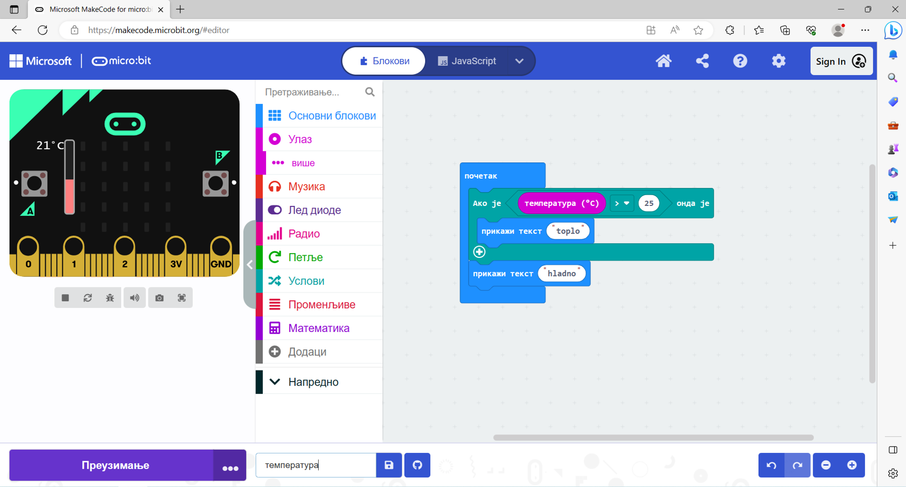
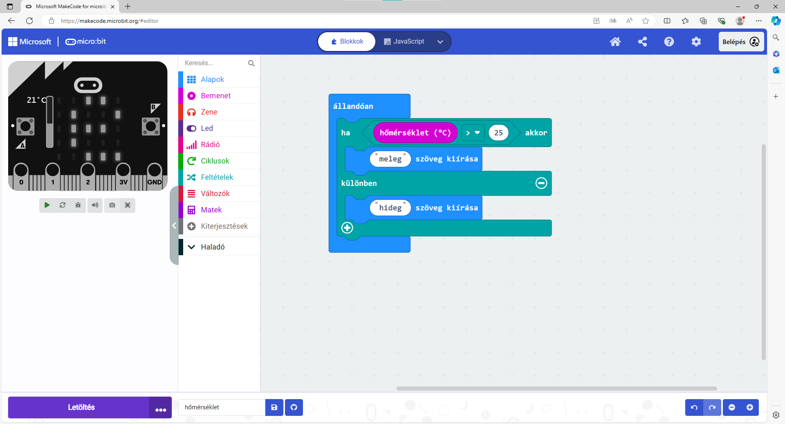
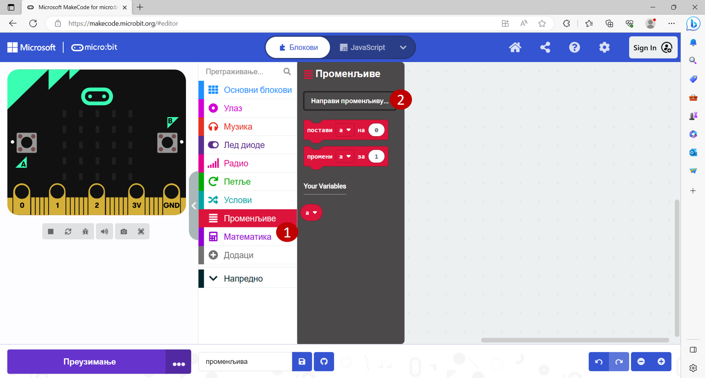
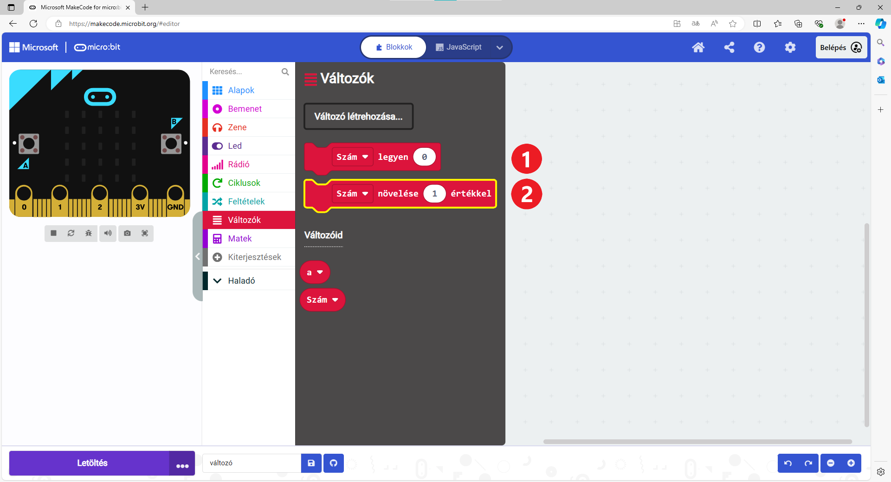
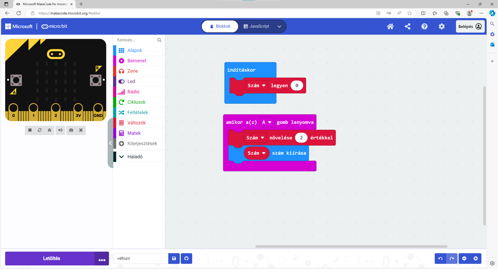

Változó értékek¶
Az előző példában a microbit különböző parancsokat hajtott végre egy matematikai kifejezés alapján, amely mindig ugyanazt adja eredményül. Ebben az esetben a program minden egyes futtatásakor a microbit a „Helytelen“ szót fogja kiírni.
Azonban legtöbb esetben a programban feltételként szereplő kifejezések változó értékűek lehetnek. Egy egyszerű példa: a felhasználó beír egy számot, és ha az osztható kettővel, a program a „Páros“ szót írja ki, ellenkező esetben pedig a „Páratlan“ szót.
A felhasználó által beírt értékek változók, ezért a microbit által kiírt értékek is ennek megfelelően változnak.

Említettük, hogy a microbit képes megmérni a hőmérsékletet. Vajon a hőmérséklet mindig ugyanaz, vagy változik?
Ebben a programozói környezetben a Bemenet csoportban egy „hőmérséklet (°C)“ blokk is található, amelyet felhasználhatsz a programodban is egy konkrét szám helyett. Ebben a blokkban a pillanatnyi hőmérséklet tárolódik, ami a program futása során különböző értékeket vehet fel.
Nézzük meg, hogyan használhatod ezt a blokkot!
8. példa¶
Készíts egy programot, amely a microbit környezetének hőmérsékletétől függően a képernyőn „meleg” vagy „hideg” szót jelenít meg!
Rendezd el a blokkokat az alábbi képen látható módon:
{kind=link}
A microbit csak egyszer mérte meg a hőmérsékletet, és kiírta, hogy „meleg” (a szimulátoron a hőmérőt 36 fokra állítottuk). Mindössze ennyi… De mi van, ha időközben megváltozik a hőmérséklet? Hol hibáztunk?
Logikus, hogy a microbitnek folyamatosan kellene, hogy mérje a hőmérsékletet, és ellenőriznie kéne, hogy meleg vagy hideg van-e.
Milyen blokkot kellene alkalmaznunk az indításkor blokk helyett?
Nézd meg, hogyan néz ki az a program, amely megoldja ezt a problémát:
{kind=link}
Nyisd meg a Bemenet csoportot, és nézd meg, milyen egyéb blokkok vannak, amelyek változó értékkel rendelkeznek! Hogyan tudnád felhasználni ezeket valamelyik programodban?
A meglévő blokkokon kívül, amelyek változó értékeket használnak (hőmérséklet, fényerősség, stb.), saját blokkokat is készíthetsz. Kitalálhatsz egy nevet a változó értékhez, és használhatod ezt a blokkot a programodban.
9. példa¶
Ez a feladat egy kissé eltér az eddigiektől. A képernyőn egy számnak kell megjelennie. Minden alkalommal, amikor megnyomod az A gombot, a számnak 2-vel kell növekednie. A program elindulásakor a számnak nullának kell lennie.
Olvasd el még egyszer a feladatot! Mit is kell valójában tenned? A számnak meg kell jelennie, amikor megnyomod a gombot. A szám mindig ugyanaz? Nem. A szám minden alkalommal változik, vagyis egy változó.
Hozzunk létre egy Szám nevű változót, és minden alkalommal, amikor megnyomod a gombot, változtassuk meg az értékét, majd jelenítsük meg!
A feladat szövege alapján mivel egyenlő a Szám változó kezdőértéke? Mennyivel kell minden alkalommal változtatni az értékét?
Hogyan hozzunk létre egy blokkot a változó értékhez?
Kattints a Változók (1) csoportra, majd a Változó létrehozása… (2) gombra! Írd be a változó nevét a megjelenő ablakba! Legyen a neve Szám!
{kind=link}
Nézd meg az alábbi képet! A változók között megjelent a saját változód is. Mostantól különböző értékeket tárolhatsz benne – hozzáadhatsz számokat, megszorozhatod egy számmal, összehasonlíthatod, stb., vagy használhatod, mint egy blokkot bármely más számmal.
{kind=link}
Matematikaórán változó értékekkel kapcsolatos feladatokat is oldottatok már meg. Általában milyen betűkkel jelöltétek őket? Milyen módokon hasonlíthatjuk össze a változókat?
Térjünk vissza a feladathoz! Állítsd össze a programot alkotó blokkokat az alábbi kép alapján:
{kind=link}
Tehát a program elején a szám nullára van állítva. Minden alkalommal, amikor megnyomod az A gombot, a Szám kettővel növekszik, és megjelenik a kijelzőn.
Módosítsd vagy egészítsd ki a programot úgy, hogy a kezdeti nulla értéket is megjelenítse!
10. példa¶
Az előző példában felfigyelhettél egy új blokkra a Bemenet csoportból. Ez lehetővé teszi, hogy bizonyos parancsok végrehajtódjanak, amikor megnyomjuk az A gombot. Ugyanígy beprogramozhatod, hogy mi legyen, ha megnyomjuk a B gombot, vagy esetleg mindkét gombot egyszerre (A + B).
A microbit más eseményekre is reagálhat – például amikor megrázzák, amikor egy adott irányba fordítják, amikor megütik valamivel, és hasonlók.
Nézd meg, milyen blokkok találhatók még a Bemenet csoportban! Ehhez az érdekes példához használjuk fel az amikor rázás érzékelve blokkot.
{kind=link}
Az egyik blokk, amely szintén rendelkezhet változó értékkel (véletlenszám _ és _ között) a Matek csoportban található.
A következő módon használtuk fel az alábbi programban:
{kind=link}
Mit csinál ez a program? Mire használhatnád azt a microbitet, amelyikben ez a program fut?